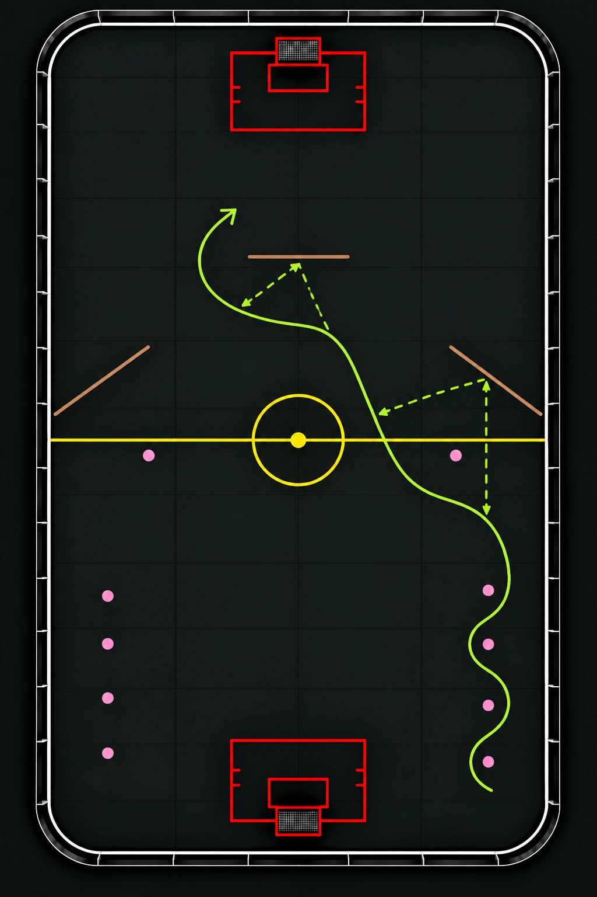

TeknikVäggspelaren
En teknikövning där spelaren driver bollen mellan koner, använder uppställd bänk/sarg för att vägga sig fram med bollen och avslutar med ett skott på mål.
Syfte
Träna bollkontroll, riktningsförändringar, passningar mot sarg, löpning utan boll och avslut på mål.
Organisation
Placera ut konerna i en sick-sack-bana närmast start. Ställ två sargbitar i vinkel så att bollen kan studsar tillbaka in i banan mot spelarens löpväg. Placera även en sista sarg/bänk som väggar innan avslut.
Genomförande
- Spelaren driver bollen i sick-sack mellan konerna.
- Spelaren passar bollen mot den första vinklade sargbiten och fortsätter löpningen för att möta upp returen.
- Spelaren tar kontroll över bollen och spelar en ny väggpassning mot den andra sargbiten.
- Spelaren löper runt sargbiten, tar med sig bollen och går på avslut mot mål.
- Efter avslutat skott, ställer sig spelaren sist i andra ledet den kom ifrån.
Tränartips
Uppmuntra spelarna att hålla bollen nära klubban i sick-sack-banan, passa med lagom kraft mot sargen och fortsätta röra sig efter passningen. Fokusera på att få kontroll på bollen före avslutet.
Man kan även utmana mer i sista väggen genom att spelaren ej få välja väg själv.
Att sätta upp något högt framför som gör att det blir mer överraskande för målvakten som blir "skymd"